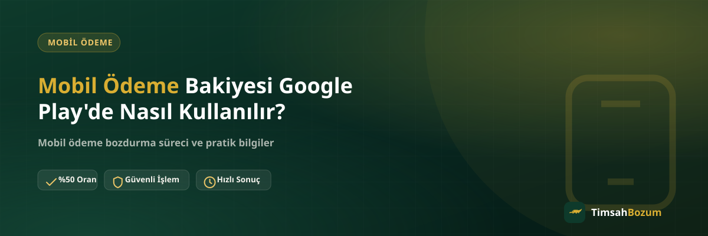

Google Play'de uygulama, oyun içi ürün veya abonelik satın alırken ödeme yöntemi olarak "mobil ödeme" (operatör faturasına yansıtma) seçeneğini görenler bunun tam olarak nasıl çalıştığını merak ediyor. Bu yazıda mobil ödeme bakiyesinin Google Play'de nasıl kullanıldığını, google play kodundan farkını ve kullanmadığın bakiyeyi nasıl değerlendirebileceğini anlatıyoruz.
Google Play'de Mobil Ödeme Bakiyesi Nedir?
Google Play'de mobil ödeme, satın alma tutarının doğrudan cebinden çıkmadan operatörün sana tanımladığı bir harcama limitinden düşülmesi ve tutarın faturana yansıması anlamına gelir. Bu, kredi kartı veya banka kartı eklemeden, sadece hat üzerinden ödeme yapabilmeni sağlayan bir yöntemdir. Vodafone, Türk Telekom ve Turkcell gibi operatörlerin hemen hepsinde bu seçenek mevcuttur, ancak her hatta otomatik olarak açık olmayabilir.
Google Play'de Mobil Ödeme Nasıl Seçilir?
Google Play uygulamasında bir satın alma işlemi başlattığında, ödeme yöntemleri arasında hattının operatörüne ait bir "mobil ödeme" veya "faturama ekle" seçeneği görünür. Bu seçeneği işaretleyip işlemi onayladığında tutar anında düşülür ve satın aldığın içerik hesabına tanımlanır. Seçenek görünmüyorsa hattında mobil ödeme limitinin tanımlı olup olmadığını operatör uygulamandan kontrol etmen gerekir.
Mobil Ödeme Bakiyesi ile Google Play Kodu Arasındaki Fark Nedir?
Bu iki kavram sık karıştırılıyor ama farklı işliyor. Google Play kodu, satın alınan ve hesaba tek seferlik girilen bir kupon; girildiğinde Google hesabına bakiye olarak yüklenir ve o bakiye harcanana kadar hesapta kalır. Mobil ödeme ise önceden yüklenen bir bakiye değil, operatörün tanımladığı bir harcama limitidir; her satın almada anlık olarak kullanılır ve doğrudan faturaya yansır. Google Play kodunu bozdurmak farklı bir süreçtir, mobil ödeme bakiyesini bozdurmak farklı bir süreçtir; ikisini karıştırmamak paylaşman gereken bilgiyi doğru belirlemeni sağlar.
Google Play'de Mobil Ödeme Neden Reddedilir?
Bir satın alma sırasında mobil ödeme seçeneği reddedilirse bunun birkaç olası nedeni vardır: hattının mobil ödeme limiti dolmuş olabilir, hat faturasızsa operatörün belirlediği bir üst sınıra ulaşılmış olabilir veya operatör tarafında geçici bir doğrulama sorunu yaşanıyor olabilir. Bu durumda önce operatör uygulamandan güncel limit durumunu kontrol etmek, ardından gerekirse operatörle iletişime geçmek en doğru adımdır.
Google Play Harcaması Faturama Nasıl Yansır?
Mobil ödeme ile yaptığın Google Play satın alımları, faturanda genellikle "dijital hizmet" veya doğrudan Google/uygulama adıyla ayrı bir kalem olarak görünür. Bu tutar, kullandığın anda mobil ödeme bakiyenden düşülmüş sayılır ve harcanmış bir tutar olarak kabul edilir; yani bir kez Google Play'de kullandığın bakiye artık bozdurulabilir bir bakiye olmaktan çıkar. Bu yüzden bakiyeni nasıl değerlendireceğine karar vermeden önce harcayıp harcamayacağını netleştirmek önemli.
Kullanmadığın Mobil Ödeme Bakiyesini Nasıl Değerlendirirsin?
Hattında mobil ödeme bakiyesi oluştu ama Google Play'de veya başka bir yerde harcamak istemiyorsan, bu bakiyeyi mobil ödeme bozdurma hizmetiyle nakde çevirebilirsin. Mobil ödeme bakiyesi kod değil bir tutar olduğu için kısmi bozum da mümkündür: bakiyenin tamamını değil, istediğin bir kısmını da bozdurabilirsin. Güncel oranı işlem öncesi WhatsApp'tan teyit etmen gerekir, çünkü oranlar zaman zaman güncellenebilir.
Google Play'de Mobil Ödeme Kullanmak Güvenli mi?
Mobil ödeme, Google'ın kendi altyapısı ve operatörün doğrulama sistemleri üzerinden işlediği için resmi ve güvenli bir ödeme yöntemidir. Ancak dikkat etmen gereken nokta, hattına tanımlı erişimin güvenliği: telefonunun veya hattının başkasının eline geçmesi durumunda senin adına satın alma yapılabilir. Google Play'in kendi güvenlik ayarlarından satın alma öncesi şifre veya biyometrik onay istemesini aktif etmek bu riski azaltır.
Bakiyeni Bozdurmadan Önce Kontrol Etmen Gerekenler
Bozum talebinde bulunmadan önce hattının operatörünü, faturalı ya da faturasız olduğunu ve mobil ödeme bakiyeni gösteren güncel bir ekran görüntüsünü hazırlaman süreci hızlandırır. Bakiyenin Google Play'de kullanılmamış, yani hâlâ harcanabilir durumda olması gerekir; bir kez harcanmış tutar üzerinden bozum yapılamaz. Bu nedenle bakiyeni bozdurmayı düşünüyorsan, işlemi Google Play'de harcamadan önce WhatsApp'tan iletişime geçmen en doğrusu.
Google Play'de Mobil Ödeme Limitini Nasıl Öğrenirsin?
Satın alma yapmadan önce ne kadar mobil ödeme limitin kaldığını bilmek istersen bunu operatörünün kendi uygulamasından (örneğin hat sorgulama veya dijital hizmetler menüsünden) görebilirsin. Google Play'in kendi arayüzü sana kalan limiti göstermez, çünkü limit yönetimi tamamen operatöre ait bir işlemdir. Limitin ne kadarının kullanılabilir olduğunu bilmeden satın almaya çalışmak, işlemin reddedilmesine ve gereksiz yere tekrar denemene neden olabilir.
Hangi Operatörlerde Google Play'de Mobil Ödeme Kullanılabilir?
Vodafone, Türk Telekom ve Turkcell hatlarının hepsinde Google Play'de mobil ödeme seçeneği teknik olarak destekleniyor, ancak seçeneğin görünmesi hattına tanımlı mobil ödeme limitine bağlı. Faturalı hatlarda bu limit genelde otomatik açık gelirken, faturasız hatlarda operatörün kendi kurallarına göre farklılık gösterebilir. Hangi operatörde nasıl işlediğini merak ediyorsan Vodafone, Türk Telekom ve Turkcell mobil ödeme sayfalarımızdan detaylı bilgi alabilirsin. Önemli olan nokta şu: hangi operatöre sahip olursan ol, Google Play'de mobil ödeme kullanmadığın bir bakiye oluştuysa bu bakiyeyi bozdurma seçeneğin operatörden bağımsız olarak her zaman geçerli.
İlgili Yazılar
- Google Play, Razer Gold ve iTunes Kodu Arasındaki Fark
- Mobil Ödeme Bakiyesi Nedir, Nasıl Oluşur?
- Mobil Ödeme Bakiyesi Nakite Nasıl Çevrilir?
Hattında kullanmadığın bir mobil ödeme bakiyesi varsa, güncel oranı öğrenmek için WhatsApp hattımıza yazarak hemen teyit alabilirsin.